>> Top Frequencies
- Scanning Airwaves...
>> Most Used Systems
- Accessing Data...
📻 24/7 Wasteland Radio
The most popular feature on the server. Bring the iconic atmosphere of Fallout to your voice channels with a single command.
- All Your Favorites: Diamond City Radio, Radio New Vegas, Appalachia Radio, and Classical.
- No Downtime: The bot streams high-quality audio directly to your channel.
- Simple Control: Just type
/radio [station]to start listening.
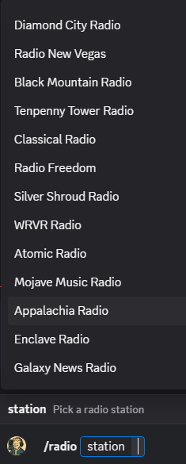
Seamless Voice Channel Integration
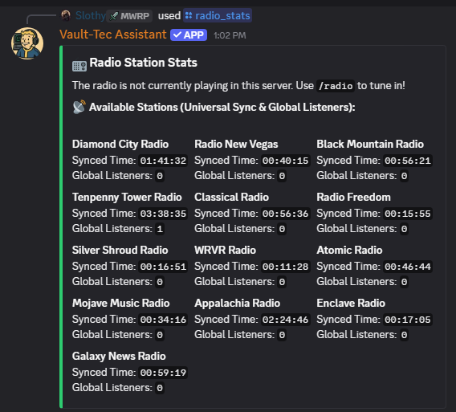
Live Station Statistics
🎒 Wasteland Expeditions
Don't have time to grind? Play like Fallout Shelter. Send your dweller out into the unknown and check back later to see what they found.
- Set It & Forget It: Send your dweller out for anywhere from 1 hour to 168 hours (1 Week).
- Real-Time Simulation: While you are away, your dweller encounters enemies, finds loot, and explores landmarks.
- Massive Rewards: The longer they stay out, the better the loot—if they survive.
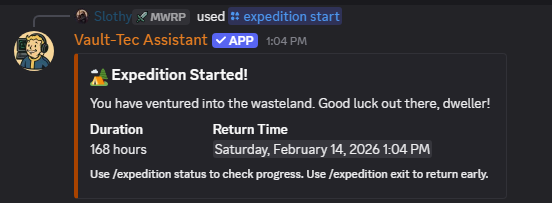
Choose your duration (up to 168 hours)
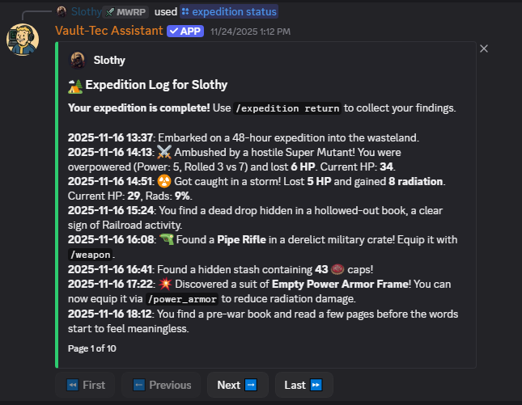
Read your Dweller's journey log

Collect rare weapons and caps
🏗️ Build Your Settlement
Found a settlement, grow your population, and manage your resources. It’s a full management game inside Discord.
- Resource Management: Balance Power, Water, and Food production to keep your happiness high.
- Passive Income: Use
/settlement collectto harvest the resources your settlers produced while you were offline. - Defense: Build defenses to protect your stockpile from raider attacks.
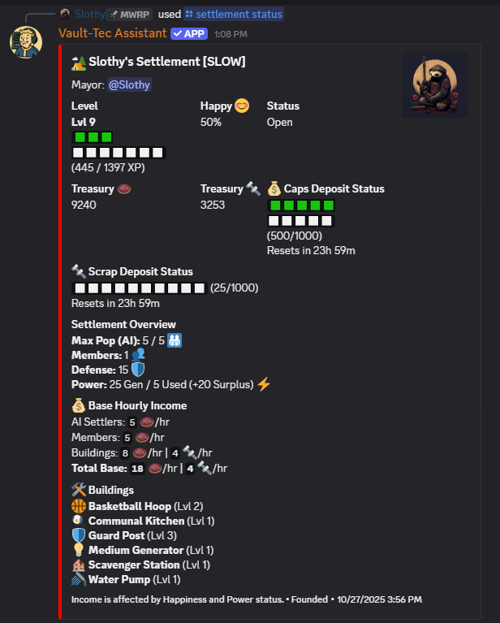
Manage population and happiness
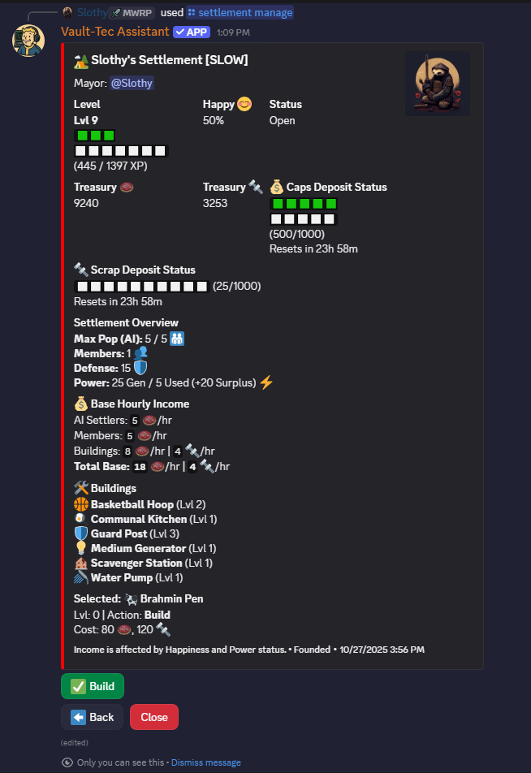
Construct Generators and much more
⚠️ Combat & Nuclear Launch
The wasteland is dangerous. Fight for survival or become the danger yourself.
- Fallout 76 Nuke Codes: Admins can use
/nukecodes set_channelto create a pinned message that automatically updates with the real-world weekly codes for Alpha, Bravo, and Charlie silos. - Wasteland Encounters: Fight Ghouls, Super Mutants, and Deathclaws for XP and loot.
- Nuke Silos: Hunt down keycards, decrypt the launch codes, and fire a nuke to trigger server-wide boss events.
- World Bosses: Defeat the Scorchbeast Queen or the Wendigo Colossus for endgame gear.
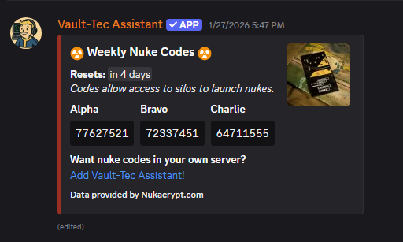
Fallout 76 Weekly Nuke Codes
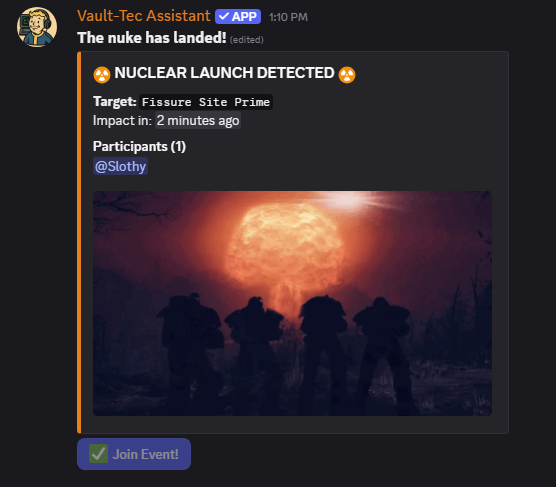
DEFCON 1: Launch Initiated
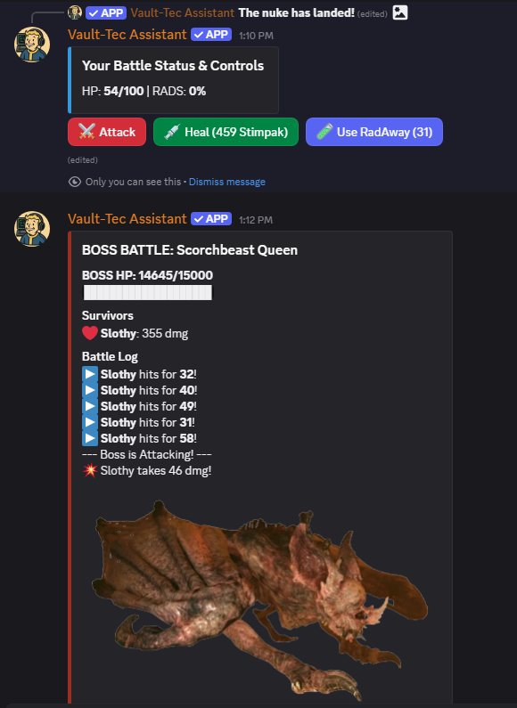
Server-wide Boss Battles
🎲 Economy & Casino
Trade with other players, set up your own vending machine shop, or gamble your caps away at the New Vegas Strip.
- Global Market:
/browse_shopsto buy items from other real players across servers. - Casino Games: Blackjack, Slots, Roulette, and Dice.
- Hacking Minigame: Solve the terminal logic puzzles to hack into locked safes.
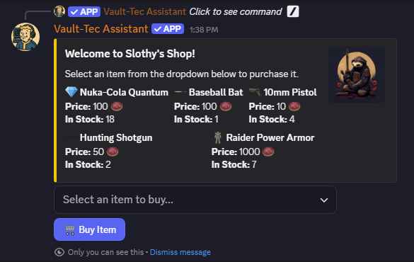
Buy and Sell with Player-Run Shops
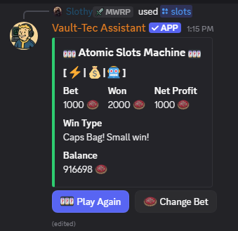
Win big at the Atomic Wrangler
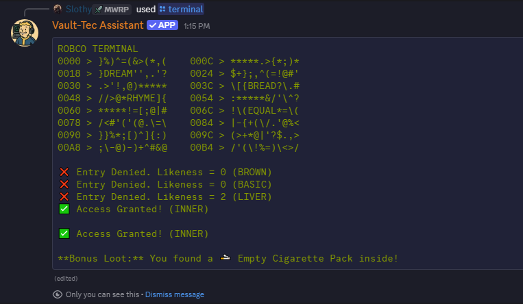
Classic Terminal Hacking
Quick Command Reference
- /radio [station] Start the music
- /expedition start [hours] Send dweller to wasteland
- /settlement create Found your base
- /settlement collect Gather generated resources
- /profile Check stats and caps
- /inventory View your loot
- /nukelaunch Endgame protocol
- /help View all commands
OVERSEER'S TIP: Always make sure your settlement has enough water before you log off for the night. Thirsty settlers don't work.